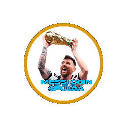

MESSICOIN
MessiCoin es un movimiento que tiene como objetivo formar una comunidad de origen argentino hacia toda Latinoamérica, y a todo el mundo.
Token PresaleMessiCoin es un movimiento que tiene como objetivo formar una comunidad de origen argentino hacia toda Latinoamérica, y a todo el mundo.
Token PresaleMessiCoin es una criptomoneda basada en memes inspirada en la figura del futbolista argentino Lionel Messi.
Puedes comprar MessiCoin durante nuestra preventa de tokens. Visita la sección de Token Presale para más información.
El suministro total de MessiCoin es de 100 millones tokens.
Puedes participar en la preventa de MessiCoin siguiendo los pasos detallados que vamos a avisar en unos dias cuando esta salga.
Puedes almacenar tus tokens de MessiCoin en cualquier cartera compatible con tokens ERC-20, como MetaMask, MyEtherWallet, etc.
El objetivo a largo plazo de MessiCoin es convertirse en una de las principales memecoins de latam
MessiCoin se diferencia por su enfoque en la comunidad de origen argentino y su conexión con la figura de Lionel Messi, lo que la hace única en el espacio de las criptomonedas basadas en memes actualmente.
El precio inicial de MessiCoin durante la preventa se determina mediante un mecanismo de fijación de precios que tiene en cuenta la demanda y otros factores relevantes.
Actualmente puedes acceder a nuestro telegram donde daremos noticias oficiales.
Creación del token $PULGA y establecimiento de sus redes sociales.
Lograr una audiencia significativa en Telegram y redes sociales.
Concluir la preventa y lanzar el token al mercado.